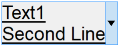
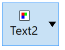
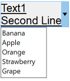
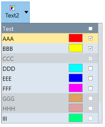
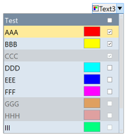

Creates an interface element that is a button with a drop down arrow. It can function as a button and as a dropdown. Its visual presentation can contain a text and/or an image.
When dropped displays a child inside a dialog with no decorations, so it can simulate the initial function of a dropdown list, but it can display any layout of IUP elements inside the dropped dialog. When the user click outside the dialog, it is automatically closed.
It inherits from IupCanvas.
Ihandle* IupDropButton(Ihandle* dropchild); [in C]
iup.dropbutton{[dropchild: ihandle]} -> ih: ihandle [in Lua]
dropbutton(dropchild) [in LED]
child: Identifier of an interface element to be displayed when the dropdown is activated. It can be NULL (nil in Lua), not optional in LED. It is not a regular child of the dropbutton. It will be displayed inside a dialog with no decorations.
Returns: the identifier of the created element, or NULL if an error occurs.
Inherits all attributes and callbacks of the IupCanvas, but redefines a few attributes.
ALIGNMENT (non inheritable): horizontal and vertical alignment of the set image+text. Possible values: "ALEFT", "ACENTER" and "ARIGHT", combined to "ATOP", "ACENTER" and "ABOTTOM". Default: "ALEFT:ACENTER". Partial values are also accepted, like "ARIGHT" or ":ATOP", the other value will be obtained from the default value.
ARROWACTIVE (non inheritable): the arrow can be disabled when the button is enabled. If there is no drop child the arrow will be automatically disabled.
ARROWCOLOR: color used for the arrow. Default use FGCOLOR.
ARROWIMAGES (non inheritable): replace the drawn arrows by the following images. Make sure their sizes are equal or smaller than ARROWSIZE. Default: No.
ARROWIMAGE (non inheritable): Arrow image name. Use IupSetHandle or IupSetAttributeHandle to associate an image to a name. See also IupImage.
ARROWIMAGEHIGHLIGHT (non inheritable): Arrow image name of the element in highlight state. If it is not defined then the ARROWIMAGE is used.
ARROWIMAGEINACTIVE (non inheritable): Arrow image name of the element when inactive. If it is not defined then the ARROWIMAGE is used and its colors will be replaced by a modified version creating the disabled effect.
ARROWIMAGEPRESS (non inheritable): Arrow image name of the element in pressed state. If it is not defined then the ARROWIMAGE is used.
ARROWPADDING (non inheritable): internal margin for the arrow. It is inside ARROWSIZE. Default: 5.
ARROWSIZE (non inheritable): size of the area occupied by the arrow, even when using images. Default: 24
BACKIMAGE (non inheritable): image name to be used as background. Use IupSetHandle or IupSetAttributeHandle to associate an image to a name. See also IupImage.
BACKIMAGEHIGHLIGHT (non inheritable): background image name of the element in highlight state. If it is not defined then the BACKIMAGE is used.
BACKIMAGEINACTIVE (non inheritable): background image name of the element when inactive. If it is not defined then the BACKIMAGE is used and its colors will be replaced by a modified version creating the disabled effect.
BACKIMAGEPRESS (non inheritable): background image name of the element in pressed state. If it is not defined then the BACKIMAGE is used.
BGCOLOR: Background color. If text and image are not defined, the button is configured to simply show a color, in this case set the button size because the natural size will be very small. If not defined it will use the background color of the native parent.
BORDER (creation only): the default value is "NO". This is the IupCanvas border.
BORDERCOLOR: color used for borders. Default: "50 150 255". This is for the IupDropButton drawn border.
BORDERPSCOLOR: color used for borders when pressed or selected. Default use BORDERCOLOR.
BORDERHLCOLOR: color used for borders when highlighted. Default use BORDERCOLOR.
BORDERWIDTH: line width used for borders. Default: "1". Any borders can be hidden by simply setting this value to 0. This is for the IupDropButton drawn border.
SHOWBORDER: by default borders are drawn only when the button is highlighted, if SHOWBORDER=Yes borders are always show. When SHOWBORDER=Yes and BGCOLOR is not defined, the actual BGCOLOR will be a darker version of the background color of the native parent.
CANFOCUS (creation only) (non inheritable): enables the focus traversal of the control. In Windows the button will respect CANFOCUS in opposite to the other controls. Default: YES.
DROPCHILD: the name of the element that will be displayed when dropped. Use IupSetHandle or IupSetAttributeHandle to associate a child to a name. In Lua you can also use the element reference directly. The drop dialog, were the drop child is inserted, is available right after setting the attribute using IupGetDialog on the drop child handle. See the Notes bellow for more information.
DROPCHILD_HANDLE: same as DROPCHILD but directly using the Ihandle* of the element.
DROPONARROW (non inheritable): when enabled only clicking on the drop arrow will show the drop child. Clicking on the remaining of the button will call FLAT_ACTION. There will be two separates areas in the button, one for the drop arrow and one for the regular button. When disabled there will be only one area, and the drop child will be show any where the button is clicked, the callback FLAT_ACTION will not be called. Default: Yes.
DROPPOSITION (non inheritable): the drop child can be shown in four different positions relative to the drop button: BOTTOMLEFT, TOPLEFT, BOTTOMRIGHT, TOPRIGHT. BOTTOMLEFT the top-left corner of the drop child is aligned with the bottom-left corner of the drop button, BOTTOMRIGHT the top-right corner of the drop child is aligned with the bottom-right corner of the drop button, TOPLEFT the bottom-left corner of the drop child is aligned with the top-left corner of the drop button, TOPRIGHT the bottom-right corner of the drop child is aligned with the top-right corner of the drop button. Default: BOTTOMLEFT.
PROPAGATEFOCUS (non inheritable): enables the focus callback forwarding to the next native parent with FOCUS_CB defined. Default: NO.
EXPAND (non inheritable): The default value is "NO".
FGCOLOR: Text color. Default: the global attribute DLGFGCOLOR.
FITTOBACKIMAGE (non inheritable): enable the natural size to be computed from the BACKIMAGE. If BACKIMAGE is not defined will be ignored. When set to Yes it will set BORDERWIDTH to 0. Can be Yes or No. Default: No.
FRONTIMAGE (non inheritable): image name to be used as foreground. The foreground image is drawn in the same position as the background, but it is drawn at last. Use IupSetHandle or IupSetAttributeHandle to associate an image to a name. See also IupImage.
FRONTIMAGEHIGHLIGHT (non inheritable): foreground image name of the element in highlight state. If it is not defined then the FRONTIMAGE is used.
FRONTIMAGEINACTIVE (non inheritable): foreground image name of the element when inactive. If it is not defined then the FRONTIMAGE is used and its colors will be replaced by a modified version creating the disabled effect.
FRONTIMAGEPRESS (non inheritable): foreground image name of the element in pressed state. If it is not defined then the FRONTIMAGE is used.
HASFOCUS (read-only): returns the button state if has focus. Can be Yes or No.
HLCOLOR: background color used to indicate a highlight state. Pre-defined to "200 225 245". Can be set to NULL. If NULL BGCOLOR will be used instead.
HIGHLIGHTED (read-only): returns the button state if highlighted. Can be Yes or No.
IMAGE (non inheritable): Image name. Use IupSetHandle or IupSetAttributeHandle to associate an image to a name. See also IupImage.
IMAGEHIGHLIGHT (non inheritable): Image name of the element in highlight state. If it is not defined then the IMAGE is used.
IMAGEINACTIVE (non inheritable): Image name of the element when inactive. If it is not defined then the IMAGE is used and its colors will be replaced by a modified version creating the disabled effect.
IMAGEPRESS (non inheritable): Image name of the element in pressed state. If it is not defined then the IMAGE is used.
IMAGEPOSITION (non inheritable): Position of the image relative to the text when both are displayed. Can be: LEFT, RIGHT, TOP, BOTTOM. Default: LEFT.
PADDING: internal margin. Works just like the MARGIN attribute of the IupHbox and IupVbox containers, but uses a different name to avoid inheritance problems. Default value: "3x3".
PRESSED (read-only): returns the button state if pressed. Can be Yes or No.
PSCOLOR: background color used to indicate a press state. Pre-defined to "150 200 235". Can be set to NULL. If NULL BGCOLOR will be used instead.
SHOWDROPDOWN (write-only): opens or closes the dropdown child. Can be "YES" or "NO". Ignored if set before map.
SPACING (non inheritable): spacing between the image and the text. Default: "2".
TITLE (non inheritable): Label's text. The '\n' character is accepted for line change.
TEXTALIGNMENT (non inheritable): Horizontal text alignment for multiple lines. Can be: ALEFT, ARIGHT or ACENTER. Default: ALEFT.
VISIBLECOLUMNS: Defines the number of visible columns for the Natural Size, this means that will act also as minimum number of visible columns. It uses a wider character size then the one used for the SIZE attribute so strings will fit better without the need of extra columns.
ACTIVE, FONT, EXPAND, SCREENPOSITION, POSITION, MINSIZE, MAXSIZE, WID, TIP, SIZE, RASTERSIZE, ZORDER, VISIBLE: also accepted.
Inherits all callbacks of the IupCanvas, but redefines a few of them. Including ACTION, BUTTON_CB, MOTION_CB, FOCUS_CB, LEAVEWINDOW_CB, and ENTERWINDOW_CB. To allow the application to use those callbacks the same callbacks are exported with the "FLAT_" prefix using the same parameters, except the FLAT_ACTION callback that now mimics the IupButton ACTION. They are all called before the internal callbacks and if they return IUP_IGNORE the internal callbacks are not processed.
FLAT_ACTION: Action generated when the button 1 (usually left) is selected. This callback is called only after the mouse is released and when it is released inside the button area. Called only when DROPONARROW=Yes.
int function(Ihandle* ih); [in C]
ih:action() -> (ret: number) [in Lua]
ih: identifier of the element that activated the event.
Returns: IUP_CLOSE will be processed.
DROPDOWN_CB: Action generated when the drop child is about to be shown or hidden.
int function (Ihandle *ih, int state); [in C]
ih:dropdown_cb(state: boolean) -> (ret: number) [in Lua]
ih:
identifier of the element that activated the
event.
state: the new state of the drop child 1=to be shown, 0=to
be hidden.
Returns: IUP_IGNORE will be processed when the button is pressed over the arrow, then the drop change will not ocour. When the dropped child loses its focus and is automatically closed, the return value is ignored.
MAP_CB, UNMAP_CB, DESTROY_CB, GETFOCUS_CB, KILLFOCUS_CB, ENTERWINDOW_CB, LEAVEWINDOW_CB, K_ANY, HELP_CB: All common callbacks are supported.
The natural size will be a combination of the size of the image and the title, if any, plus PADDING and SPACING (if both image and title are present), and plus the horizontal space occupied by the arrow.
The drop dialog is configured with no decorations and it is not resizable, only the FOCUS_CB and K_ESC callbacks are set. But this can be changed by the application. It is a regular IupDialog. To obtain the drop button handle from the handle of the dialog get the "DROPBUTTON" attribute handle from the dialog, using IupGetAttributeHandle. After performing some operation on the drop child, use SHOWDROPDOWN=NO on the drop button, you may also update its TITLE, just like a regular IupList with DROPDOWN=Yes, but this will not be performed automatically by the drop button. For example, set the ACTION callback on the IupList used as drop child:
static int list_cb(Ihandle* list, char *text, int item, int state)
{
if (state == 1)
{
Ihandle* ih = IupGetAttributeHandle(IupGetDialog(list), "DROPBUTTON");
IupSetAttribute(ih, "SHOWDROPDOWN", "No");
IupSetStrAttribute(ih, "TITLE", text);
}
return IUP_DEFAULT;
}
Additionally to mimic a IupList with DROPDOWN=Yes set SHOWBORDER=Yes and DROPONARROW=NO on the drop button. But notice that the natural size will not use the largest item in the drop child list, so you can use EXPAND=HORIZONTAL or set VISIBLECOLUMNS, both on the drop button.
The following screenshots where taken while the button is highlighted or dropped.
|  |  | |
|  |  |  |